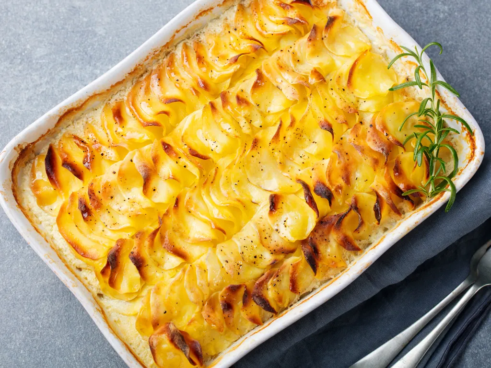

Gratin

Le gratin dauphinois
Le gratin dauphinois est un plat gratiné traditionnel de la cuisine française, d'origine dauphinoise, à base de pommes de terre et de lait.
Le plat apparaît engtre le 16ème et le 17ème siècle, au moment où la pomme de terre fait son apparition.Ce plat va finalement se répandre dans les auberges de la région du sud-est de la France puis arriver à Paris. En 1930, on trouve un restaurant baptisé le Gratin Dauphinois à Paris.
Ingredients
- 1.2kg potatoes
- 1/2 liter milk
- 1/2 liter liquid cream
- 1 clove garlic
- butter
- salt and pepper
Steps
- Éplucher, laver et coupere les pommes de terre en rondelles fines.
- Hacher l'ail très finement.
- Porter à ébullition dans une casserole le lait,l'ail,le sel et le poivre puis y plonger les pommes de terre et laisser cuire 10 à 15 minutes selon leur fermeté.
- Préchauffer le four à 180°C et beurrer le plat à gratin.
- Placer les pommes de terre égouttées dans le plat. Les recouvrir de crème,puis disposer des petites noix de beurre sur le dessus.
- Enfourner pour 50 min à 1 heure de cuisson.